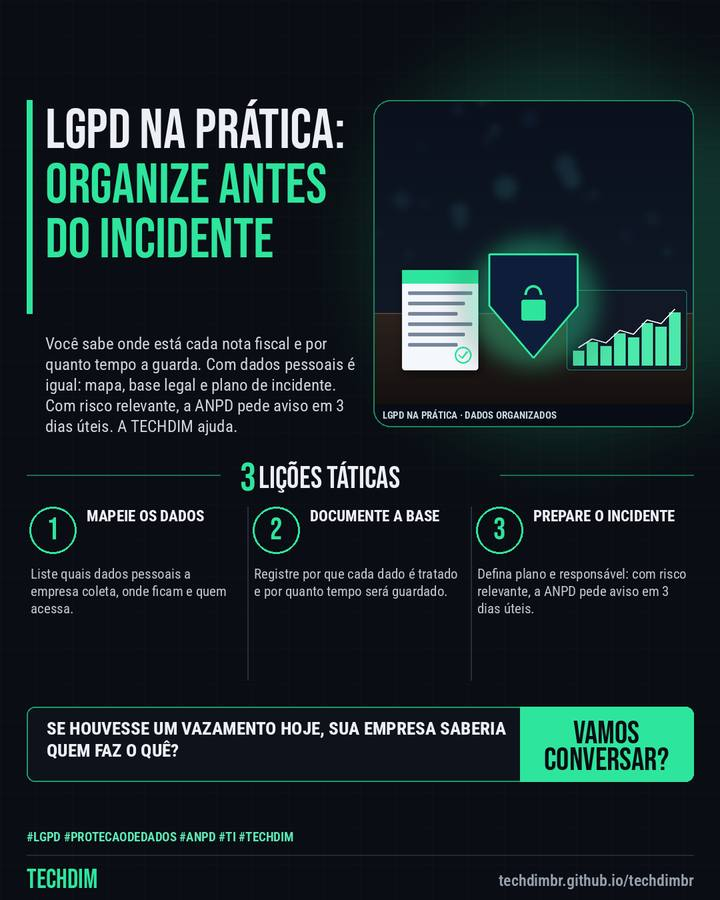

Serviço TECHDIM
LGPD: incidente com risco relevante pede aviso à ANPD em 3 dias úteis; tenha plano pronto
Você sabe onde está cada nota fiscal e por quanto tempo a guarda. Com dados pessoais é igual: mapa, base legal e plano de incidente. Com risco relevante, a ANPD pede aviso em 3 dias úteis. A TECHDIM ajuda.

O que a TECHDIM faz
- Nota fiscal você sabe onde está, por que guarda e por quanto tempo. Com dados pessoais, a LGPD pede a mesma organização: mapa de dados, base legal e prazo de guarda
- Se um incidente puder causar risco ou dano relevante aos titulares, o controlador comunica a ANPD em até 3 dias úteis (Resolução CD/ANPD nº 15/2024)
- A TECHDIM ajuda a mapear os dados, documentar base legal e retenção, montar o canal do titular e o plano de resposta a incidente, e a implantar os controles técnicos
Sua empresa sabe onde estão os dados dos clientes? Fale com a TECHDIM: techdimbr.github.io/techdimbr
Como funciona
- Mapeie os dados. Liste quais dados pessoais a empresa coleta, onde ficam e quem acessa.
- Documente a base. Registre por que cada dado é tratado e por quanto tempo será guardado.
- Prepare o incidente. Defina plano e responsável: com risco relevante, a ANPD pede aviso em 3 dias úteis.
Mais do Radar de hoje
- Notícia de tecnologia Windows 11: Remote Desktop pode falhar para usuários comuns após atualização (0xC000000D)
- Alerta de segurança Ataque a geladeiras de supermercados na França: firmware desatualizado abriu a porta
- Dica prática SSH com chave em vez de senha: proteja o acesso ao servidor Linux em 5 passos
Leia também
Este texto resume as fontes citadas na data de publicação. Confira sempre o aviso oficial do fabricante antes de agir em produção.